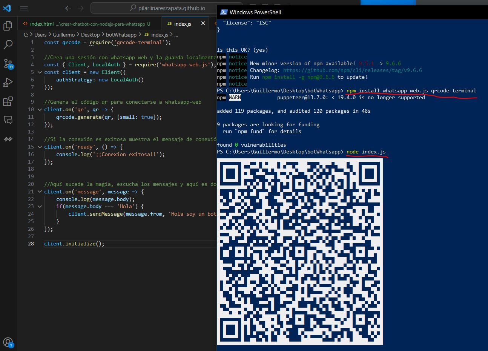
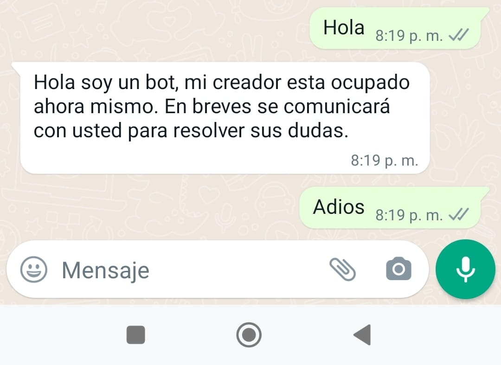

Cómo crear un chatbot para WhatsApp
En este artículo te voy a enseñar cómo crear un chatbot usando Node.js y la plataforma de mensajería instantanea de WhatsApp.
¿Qué es un chatbot?
Un chatbot es un programa de ordenador que utiliza inteligencia artificial (IA) para comunicarse con los usuarios. Los chatbots pueden ser programados para responder preguntas, proporcionar información, realizar tareas y mucho más. Los chatbots se están volviendo cada vez más populares, especialmente en aplicaciones de mensajería instantánea, ya que permiten una comunicación rápida y eficiente con los usuarios.
¿Qué es Node.js?
Node.js es una plataforma de programación basada en el motor de JavaScript V8 de Google. Node.js se utiliza para crear aplicaciones web y de red escalables y de alta velocidad. Node.js utiliza un modelo de programación basado en eventos no bloqueantes, lo que significa que puede manejar múltiples solicitudes y eventos simultáneamente sin bloquear el hilo de ejecución principal.
Creando un chatbot para WhatsApp usando Node.js
Para crear un chatbot para WhatsApp utilizando Node.js, necesitamos usar una biblioteca llamada "whatsapp-web.js". Esta biblioteca nos permite interactuar con la plataforma de WhatsApp a través de la API web de WhatsApp. A continuación se presentan los pasos para crear un chatbot en WhatsApp utilizando Node.js:
-
Instalar Node.js y whatsapp-web.js
Antes de comenzar, hay que instalar Node.js en nuestro ordenador (Haz clic aquí para descargar) y crear una carpeta en nuestro ordenador para nuestro proyecto de chatbot. Luego, abrimos una terminal, nos situamos en nuestra carpeta creada y ejecutamos los siguientes comandos para crear un archivo package.json y instalar la biblioteca "whatsapp-web.js":
npm init npm install whatsapp-web.js qrcode-terminal*Para utilizar el comando npm en Windows, recomiendo hacerlo desde el terminal Windows PowerShell y no desde el símbolo del sistema.
-
Crear y configurar el archivo index.js
A continuación, nos situamos en la carpeta creada anteriormente y creamos un archivo llamado index.js (realmente puedes llamarlo como quieras solo asegurate de ponerle la extensión .js). También puedes descargar el archivo haciendo clic aquí.
El archivo index.js deberá contener el siguiente código:
const qrcode = require('qrcode-terminal'); //Crea una sesión con whatsapp-web y la guarda localmente para autenticarse solo una vez por QR const { Client, LocalAuth } = require('whatsapp-web.js'); const client = new Client({ authStrategy: new LocalAuth() }); //Genera el código qr para conectarse a whatsapp-web client.on('qr', qr => { qrcode.generate(qr, {small: true}); }); //Si la conexión es exitosa muestra el mensaje de conexión exitosa client.on('ready', () => { console.log('¡¡Conexión exitosa!!'); }); //Escucha los mensajes y el bot responde lo que le hayamos puesto client.on('message', message => { console.log('Mensaje recibido:', message.body); if (message.body === 'Hola') { client.sendMessage(message.from, 'Hola soy un bot, mi creador esta ocupado ahora mismo. En breves se comunicará con usted para resolver sus dudas.'); } }); /* Finalmente, esta línea inicia la sesión de WhatsApp Web. Una vez que se ejecuta esta línea, el bot comenzará a escuchar y responder a los mensajes recibidos en la cuenta de WhatsApp asociada. */ client.initialize(); -
Esteblecer la conexión con Whatsapp
Una vez que estamos conectados a la plataforma de WhatsApp, podemos escuchar los mensajes entrantes ejecutando (node nombreArchivo.js) el siguiente comando:
node index.jsCuando hayamos ejecutado el comando se nos generará un código QR que escanearemos desde la app de WhatsApp, hacemos clic en dispositivos vinculados y escaneamos.
Si la conexión es ha establecido con éxito, deberá aparecer en el terminal '¡¡Conexion exitosa!!'.
-
Terminada la configuración.
Ahora podemos poner a prueba nuestro chatbot para WhatsApp. Enviamos un mensaje de Hola a nuestro número vinculado de WhatsApp y deberíamos recibir una respuesta del bot que hemos configurado. En nuestro caso, la respuesta es:Hola soy un bot, mi creador esta ocupado ahora mismo. En breves se comunicará con usted para resolver sus dudas., Podemos comprobar en la imagen que si ponemos un mensaje que no sea "Hola", el chatbot no respoderá.
¡¡Funcionaa!!, Todo ha salido bien, ya tenemos nuestro chatbot para WhatsApp. Hemos creado un bot fácil de configurar, rápido, gratuito y que funciona perfectamente. Próximamente mejoraremos la funcionalidad para recibir y enviar mensajes.
Conclusión
En este artículo, hemos aprendido cómo crear un chatbot para WhatsApp utilizando Node.js y la biblioteca "whatsapp-web.js". Los chatbots son una forma eficiente y escalable de interactuar con los usuarios, y WhatsApp es una plataforma popular para implementar chatbots debido a su gran base de usuarios. Node.js es una plataforma de programación de alto rendimiento y escalable que es ideal para crear aplicaciones web y de red, y su modelo de programación basado en eventos lo hace perfecto para manejar múltiples solicitudes simultáneamente. Espero que este artículo te haya ayudado a comprender cómo crear un chatbot en WhatsApp utilizando Node.js y la biblioteca "whatsapp-web.js".